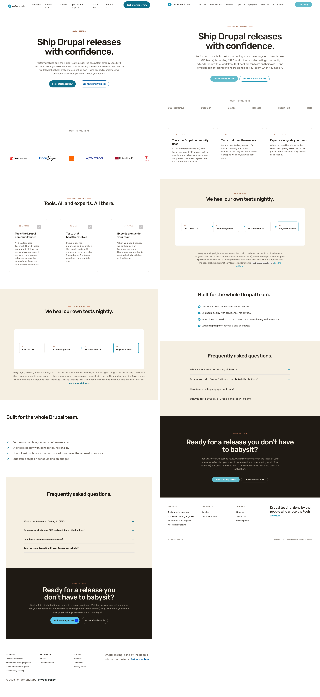
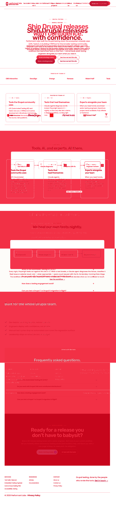
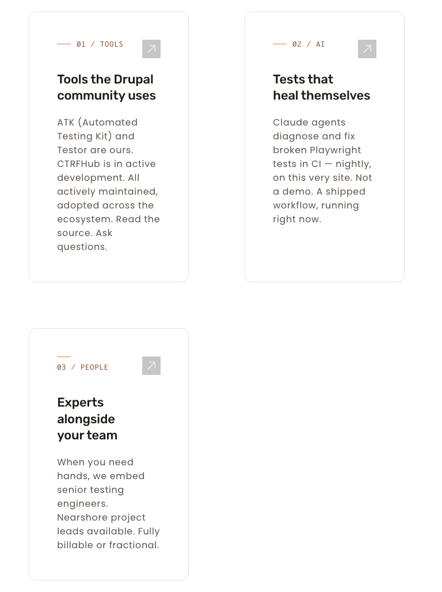
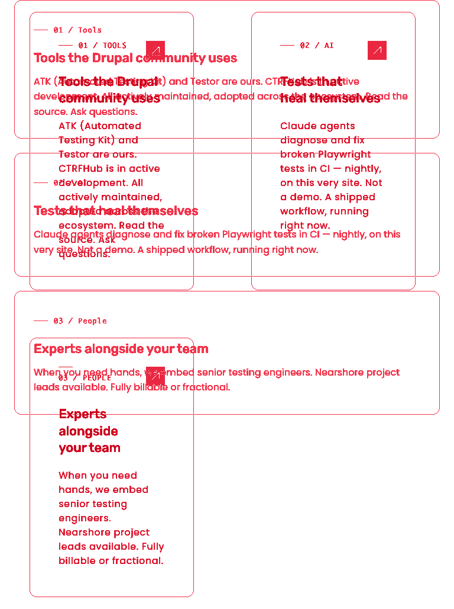
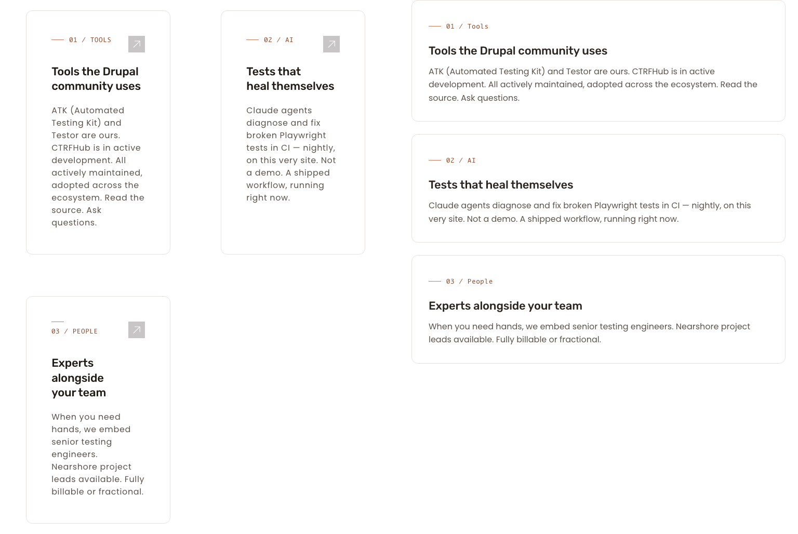
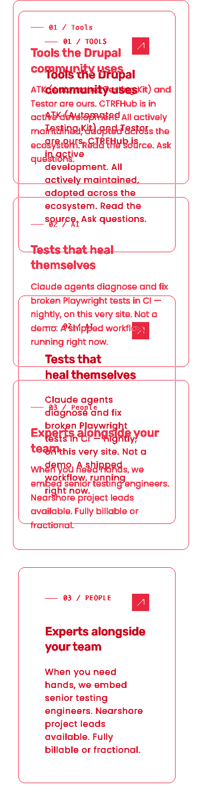
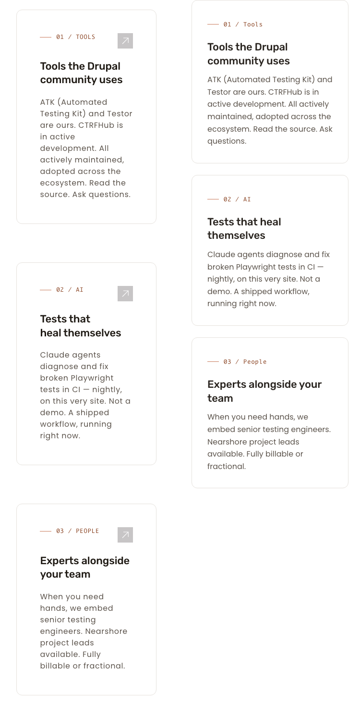

The feature-card grid now renders as a single 3-column row at desktop (1280), a 2 + 1 layout at tablet (768), and a 1-column stack at mobile (375). The Phase 8.2 hero-band and logo-grid fixes are preserved at 768 (live screenshots are byte-identical between 8.2 and 8.4 at 768 and 375). Whole-page deltas remain in the same range as the 8.2 audit because other deltas (header, hero whitespace, footer-CTA polish, FAQ icons, footer casing) belong to other unrun sub-cycles (8.1, 8.5, 8.6) and are out of scope for this verdict.
| Viewport | Live layout | Card 1 / 2 / 3 top-y (px) | Card widths | Brief / issue spec | Result |
|---|---|---|---|---|---|
| 1280 | 3-column single row | 1744 / 1744 / 1744 | 305 / 305 / 305 | 3 columns, one row | MATCH |
| 768 | 2 + 1 (cards 01 & 02 row 1, card 03 row 2) | 1926 / 1926 / 2476 | 278 / 278 / 278 | 2 columns | MATCH |
| 375 | 1 column stacked | 2245 / 2771 / 3273 | 291 / 291 / 291 | 1 column | MATCH |
Drag the slider to wipe between the live render (left) and the static preview (right). Colors and chrome differ; the layout (three cards in a single row) matches.
Red bands track the card-content height difference (live cards are taller because of additional chrome and content); the column structure itself shows no horizontal misalignment.


Live shows 2 + 1 (per brief). Preview at this viewport stacks all three cards into 1 column; this is a preview/brief contradiction — the brief and issue specify 2 columns at 768, and the live correctly follows the brief.



Live and preview both stack all three cards in a single column. Live cards are taller due to additional chrome; column structure matches.


Hero band at 768 (8.2 baseline vs 8.4 live), pixel-by-pixel: 0 differing pixels (0.0000% delta). The live screenshots are byte-identical between cycle-8.2 and cycle-8.4 at 768 and 375; only the 1280 view differs, and the differences are isolated to the y-band starting at row 1744 (the feature-card section) and below — that band is the intentional collapse from 2-row to 1-row layout. No new visual changes appear elsewhere on the page.
| Check | Result | Evidence |
|---|---|---|
Hero band 768: .hero.theme--white { padding-inline: 0 } still in effect | PASS — no regression | 0 differing pixels in hero crop, 8.2 vs 8.4 live |
Logo grid 768: flex-wrap: nowrap at min-width: 992px preserved | PASS — no regression | Whole-page 768 live image is byte-identical between 8.2 and 8.4 |
| No horizontal overflow at 1280 / 768 / 375 | PASS | Document widths 1265 / 753 / 360 vs viewports 1280 / 768 / 375 |
| Section | Viewport | Status | Description | Crop |
|---|---|---|---|---|
| Feature cards | 1280 | MATCH | 3 cards in a single row, matching brief and preview. Card-content height differs from the simpler preview HTML (this is a content delta, not a layout problem). | |
| Feature cards | 768 | MATCH (per brief) | 2 + 1 layout, matching brief's 2-column spec at 768. The static preview shows 1-column at 768; this is a preview/brief contradiction and the live correctly follows the brief. | |
| Feature cards | 375 | MATCH | 1-column stack, matching brief and preview. | |
| Hero band (regression) | 768 | MATCH (no regression) | 0 differing pixels between cycle-8.2 live and cycle-8.4 live in the hero region. Phase 8.2 horizontal-overflow fix preserved. | |
| Header / nav | 1280 / 768 / 375 | DELTA — out of scope | Header treatment differences belong to sub-cycle 8.1. Not addressed in 8.4. Does not block this verdict. | — |
| Hero whitespace / CTAs | 1280 | DELTA — out of scope | Hero spacing tuning belongs to sub-cycle 8.5. Not addressed in 8.4. | — |
| Footer CTA / FAQ icons / footer casing | all | DELTA — out of scope | Belongs to sub-cycle 8.6. Not addressed in 8.4. | — |
PASS for sub-cycle 8.4. The feature-card grid section now renders 3 / 2+1 / 1 columns at 1280 / 768 / 375 respectively, matching the brief's responsive spec. The Phase 8.2 hero-band and logo-grid fixes are preserved (0 px regression). No horizontal overflow at any viewport. Ready for O to commit and merge.